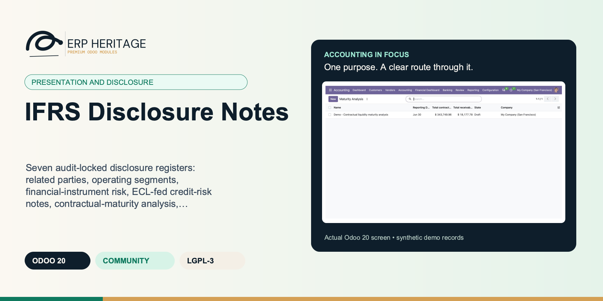
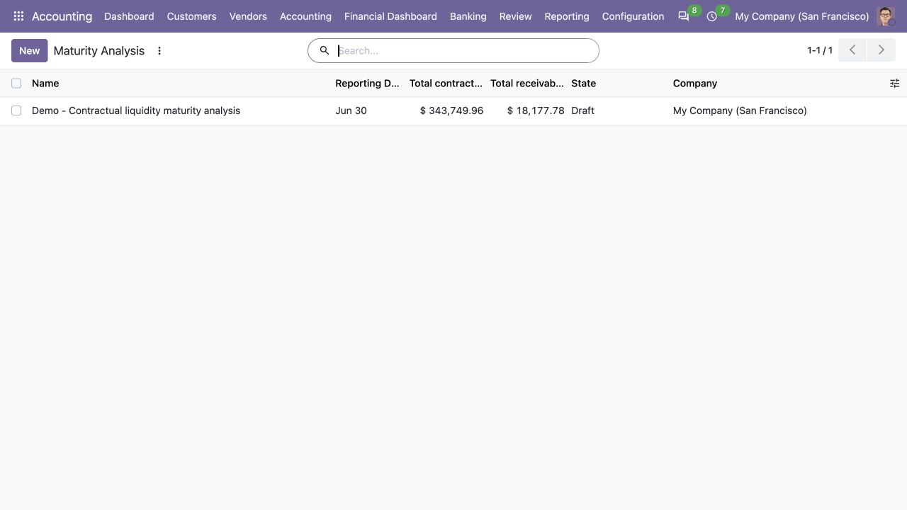
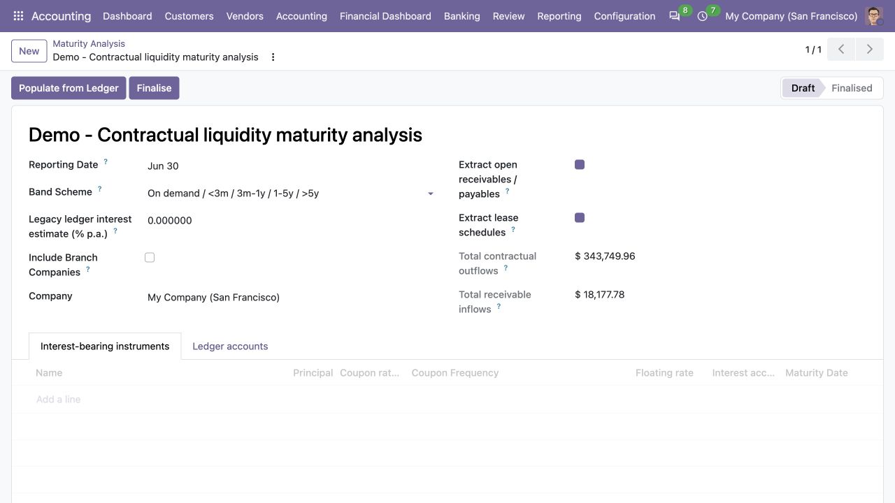
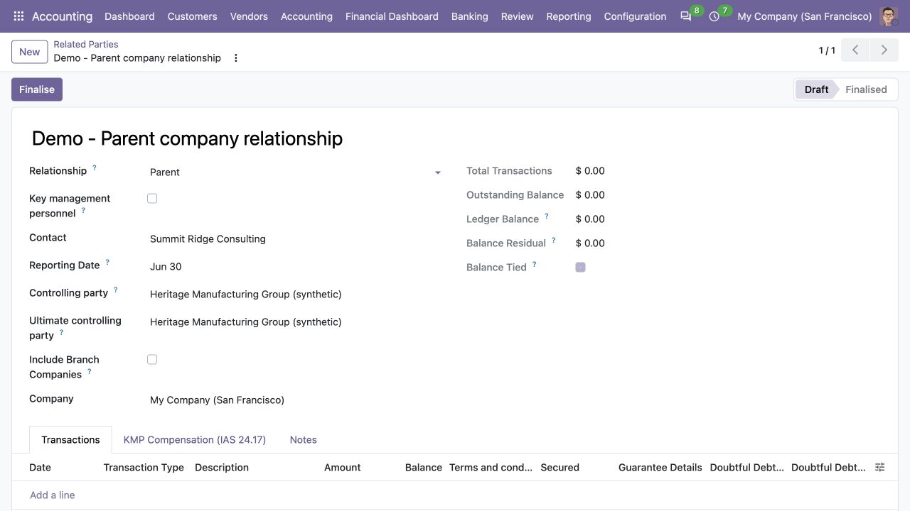
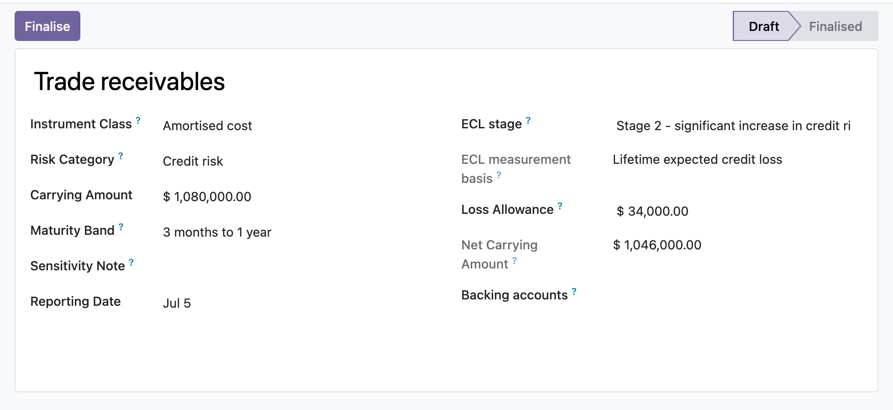

ERP HERITAGE / ODOO 20 COMMUNITY
Seven audit-locked disclosure registers: related parties, operating segments, financial-instrument risk, ECL-fed credit-risk notes, contractual-maturity analysis, market-risk sensitivity and interests in other entities, each governed and tied to its accounting evidence.
LGPL-3 · Odoo 20 · v20.0.1.2.3 · Module guide, setup, workflows and rollout checks
The purpose
Financial Statement Disclosures maintains seven disclosure registers that a plain ledger does not produce, and generates their numbers instead of asking for them. A related-party register (IAS 24) records relationships, transactions and outstanding balances, ties the outstanding balance back to the linked contact's posted receivable and payable lines, and carries the IAS 24.17 key-management compensation categories with the share-based figure prefilled from the IFRS 2 engine when installed. An operating-segment report (IFRS 8) captures segment revenue, result, assets and liabilities, reconciles the segment totals to entity totals, flags each segment against the IFRS 8.13 ten-percent thresholds, derives segment revenue and result from analytic-tagged postings, and computes the IFRS 8.34 major-customer test from posted revenue by customer. A financial-instrument risk register (IFRS 7) classifies exposures by credit, liquidity and market risk and ties carrying amounts to named ledger accounts. A credit-risk note (IFRS 7.35A-N) auto-feeds its staging table, loss-allowance reconciliation and provision-matrix summary from posted expected-credit-loss runs when the ECL engine is installed, flagging any manual override that disagrees. A contractual-maturity run (IFRS 7.39) buckets undiscounted cash flows from selected liability accounts, per-instrument coupon schedules, open receivables and payables, and IFRS 16 lease schedules, under configurable band schemes. A sensitivity analysis (IFRS 7.40) computes the currency shock on net open monetary positions per currency and the interest-rate shock on floating-rate instruments, with the assumptions disclosed alongside. An interests-in-other-entities register (IFRS 12) records subsidiaries, associates, joint ventures and structured entities with ownership, non-controlling interest, significant restrictions and the significant-judgements narrative. Every register can be finalised and locked by an accounting manager, and posts no journal entries.
Inside Odoo 20
Captured from Odoo 20 Community using synthetic demonstration records. Configuration screens show the available workflow; external service connectivity still requires the relevant provider setup and validation.

Prepared maturity analysis summarizes contractual outflows and receivable inflows while remaining in draft.
Captured 2026-09-22 from isolated Odoo 20 Community database with synthetic demonstration records. No external submission or live banking activity is represented.

Draft maturity workpaper shows its reporting date, maturity bands and ledger-extraction options.
Captured 2026-09-22 from isolated Odoo 20 Community database with synthetic demonstration records. No external submission or live banking activity is represented.

Draft related-party disclosure records a synthetic parent relationship and controlling-party information.
Captured 2026-09-22 from isolated Odoo 20 Community database with synthetic demonstration records. No external submission or live banking activity is represented.
Inside this module
Related-party balances tie to the contact's posted receivable and payable lines, financial-risk carrying amounts tie to named accounts, and segment revenue and result derive from analytic-tagged postings, so a hand-keyed figure that drifts from the general ledger becomes visible instead of hiding in a spreadsheet.
Segments are tested against the IFRS 8.13 ten-percent revenue, profit-or-loss and asset thresholds; credit exposures are staged under the IFRS 9 twelve-month and lifetime ECL model that feeds the IFRS 7.35H net carrying amount; the maturity analysis projects undiscounted contractual cash flows including coupons per IFRS 7.B11D.
Every register can be finalised by an EH Accounting Manager, which freezes its input figures, blocks edits and deletes, and even refuses appended child rows so a signed-off disclosure cannot be silently re-keyed. Computed tie-out and reconciliation figures still recompute, and only a manager can reopen.
The maturity analysis reads a financial-liability line as a positive outflow by taking the credit-side magnitude, so a payable is not mislabelled as a negative amount when bucketed into a band.
Per-instrument projection bands a coupon bond's interim coupons into the earlier maturity bands and its principal plus final coupon into the maturity band, rather than collapsing the whole instrument into one band, and a zero-rate instrument reports principal only.
Once a register is finalised, the child rows enforce a create guard, so a segment line, related-party transaction, maturity band or instrument cannot be appended to slip a figure past the frozen parent total.
A raw ORM write of the state field is refused; only the manager-gated transition actions can finalise or reopen a register. Engine evidence uses a process-random opaque capability that a Boolean RPC context value cannot forge.
A narrative-only relationship, segment or risk exposure with no linked contact, analytic account or backing account is treated as tied rather than drifted, so a register with no ledger counterpart never raises a false mismatch.
From input to outcome
Choose the relevant disclosure register and establish the relationships, accounts or analytic dimensions it needs. Gather related-party relationships, segment definitions, financial exposures, maturity inputs and interests in other entities. Use a representative case with a known expected result so the team can separate configuration decisions from unexpected behaviour. Keep the supporting commercial or accounting evidence available during review.
Generate or enter the supported note figures and inspect any feeds available from separately installed accounting engines. Follow the record’s available actions in the order intended by the workflow. Review the selected company, relevant dates and any validation messages before continuing. If the source data changes, reassess the result against the updated evidence.
At period close the accountant builds the segment report, keys entity revenue and each reportable segment, and watches the reconciliation line and the ten-percent flags update as they go. They tag segment lines to analytic accounts so revenue and result pull straight from posted moves, then log related-party transactions with the outstanding balance auto-checked against each contact's ledger. A maturity run reads the open loan accounts and buckets the undiscounted cash flows into bands. When the numbers agree, the manager finalises each register, which freezes the figures and locks the disclosure for the auditor, who has read-only access.
Review reconciliations, threshold tests, manual overrides and finalisation controls before signing the note record. Compare the outcome with the expected treatment for this case and record the reason for any difference that requires follow-up. Give exceptions an owner so they do not disappear inside a period-end spreadsheet.
Keep narrative policy and entity-specific disclosures under the reporting team’s review; seven governed registers do not constitute every possible financial-statement note. Include the accepted operating example, configuration choices and unresolved dependencies in the handover. Review them when business policy, source data or the surrounding Odoo applications change.
Product views
Product screenshots supplied with this module. Records and amounts are illustrative; appearance can vary with your configuration and release.

Financial risk register with ECL staging
Business situations
IFRS Disclosure Notes is relevant to financial-reporting teams preparing supporting notes who need to answer this question: Can each supported disclosure register explain its numbers and reconcile material balances to accounting evidence? Start with the process that creates the decision, identify its owner and agree what evidence the reviewer needs. A narrow pilot helps the team evaluate the supported workflow using its own accounting data before broadening access.
Use the module’s presentation and disclosure role as one part of a controlled close. Bring the relevant related-party relationships, segment definitions, financial exposures, maturity inputs and interests in other entities to the review, then explain the result alongside the business event it represents. Establish which outputs become part of the reporting pack and which outstanding matters need a separate accounting decision.
Turn the business question into an acceptance case: Can each supported disclosure register explain its numbers and reconcile material balances to accounting evidence? Use one ordinary example and one relevant exception from the supported scope below. Ask the intended operator to prepare it and the reviewer to explain the result. Retain that accepted example with the deployment notes so future changes can be assessed against an understood process.
Before the first result
Confirm that the organisation needs the supported presentation and disclosure process described here. Identify the responsible financial-reporting teams preparing supporting notes and write down the decision they expect the module to support. Use the limitations section to separate shipped behaviour from an integration, professional judgement or operational service that needs another owner.
Prepare related-party relationships, segment definitions, financial exposures, maturity inputs and interests in other entities. Check the relevant records in the intended company and use dates that match the business event. Resolve missing accounting configuration before evaluating calculated output; plausible-looking totals do not establish that the chosen inputs or policies are correct.
This module declares Accounting Suite Base as part of its installation foundation. Its direct standard-Odoo dependencies are account, mail. Review the actual dependency set in the target database before a rollout, especially where another addon also extends the same accounting models, menus or posting actions.
Define who operates IFRS Disclosure Notes, who reviews unusual results and who maintains configuration. Run the representative workflow below in a test database using the intended users. Confirm that users can reach the work they own and that the reviewer understands the available evidence before moving the process into live operation.
Workflow reference
Related party (IAS 24) and Related-party transaction hold relationships (parent, subsidiary, associate, KMP, close family, other), transactions by type and outstanding balances, with an advisory ledger tie-out of the balance to the linked contact's posted receivable and payable lines (IAS 24.18-19).
Operating segment report (IFRS 8) and Operating segment line capture revenue, result, assets and liabilities, reconcile segment totals to entity totals, flag each line against the IFRS 8.13 ten-percent thresholds, and derive revenue and result pro rata from analytic-distribution postings.
Financial instrument risk exposure (IFRS 7) classifies exposures by credit, liquidity and market risk, stages credit exposures under the IFRS 9 twelve-month and lifetime ECL model, computes the net carrying amount after the loss allowance (IFRS 7.35H), and ties the carrying amount to named ledger accounts.
Credit-risk disclosure note (IFRS 7.35A-N) mirrors the latest posted ECL run's staging, allowance reconciliation and provision matrix, preserves reviewed manual overrides with discrepancy flags, and revalidates the feeder before finalisation.
Contractual maturity analysis run (IFRS 7.39) reads open posted liability lines or per-instrument coupon schedules and buckets undiscounted contractual cash flows, principal plus interest, into on-demand, under-3-month, 3-month-to-1-year, 1-to-5-year and over-5-year bands (IFRS 7.B11D).
Market-risk sensitivity analysis (IFRS 7.40) derives foreign-currency open positions and applies an explicitly selected authoritative floating-rate source, with the shock assumptions disclosed alongside.
Interest in another entity (IFRS 12) records subsidiaries, associates, joint ventures, joint operations and unconsolidated structured entities with ownership and voting percentages, consolidation method, and a computed non-controlling interest for subsidiaries (IFRS 12.10-31).
Each register carries a draft and finalised state with manager-only finalise and reopen, per-company record rules isolate data, and auditor group access is read-only. Chatter tracking records sign-off and reopen history on all seven parent registers; disclosures post no journal entries.
A finalised note is locked: its staging table, reconciliation and provision-matrix summary cannot be edited, re-populated or appended. Only a manager can finalise or reopen it. The computed totals and discrepancy flags still recompute.
Revision timestamp of the posted ECL run when this note was populated; finalisation refuses a missing, reversed or changed source.
Engine rows are wiped and rebuilt on every populate. A manual row survives populate and overrides the engine figure for its stage, with the discrepancy flagged.
True when the row is linked to engine figures and either the gross or the allowance disagrees with them beyond currency rounding.
A finalised interest disclosure is locked: its figures cannot be edited. Only a manager can finalise or reopen it. The computed non-controlling interest still recomputes.
The significant judgements and assumptions made in determining that the entity controls, jointly controls or significantly influences the other entity, including when the conclusion runs against the presumption from the voting share (IFRS 12.7-9).
Nature of the significant restriction on the ability to access or use the entity's assets or settle its liabilities (IFRS 12.13(a)-(b) / 12.22(a)).
A finalised risk exposure is locked: its measurement and input figures cannot be edited, and it cannot be deleted. Only a manager can finalise or reopen it. The computed net carrying amount and ledger tie-out still recompute (IFRS 7.35H).
The instrument bears a floating (variable) interest rate. Flagged exposures feed the computed IFRS 7.40 interest-rate sensitivity at their carrying amount. The carrying amount is signed: positive for a net asset (a rate rise is a gain), negative for a net liability (a rate rise is a loss).
IFRS 9 impairment stage for a credit-risk exposure (IFRS 7.35A-N). Leave empty when not applicable, e.g. for a liquidity- or market-risk exposure. Stage 1 measures a 12-month expected credit loss; stages 2 and 3 measure a lifetime expected credit loss.
Measurement basis implied by the stage: 12-month for stage 1, lifetime for stages 2 and 3 (IFRS 7.35A-N). Empty when no stage is set.
Staged expected-credit-loss allowance recognised against the gross carrying amount (IFRS 7.35H, 35L). Defaults to zero, so an existing exposure with no allowance reports its gross carrying amount as the net.
Optional. When set, the ledger carrying amount below is the net posted balance of these accounts on or before the reporting date, and the entered carrying amount is tied out against it.
Net posted balance of the backing accounts at the reporting date (positive for a net asset, negative for a net liability).
True when no backing account is set (not applicable) or the entered carrying amount equals the ledger balance within currency rounding. False signals drift from the ledger.
A finalised run is locked: its inputs, bands and instruments cannot be edited, re-populated or appended. Only a manager can finalise or reopen it.
Bucket boundaries used when populating (IFRS 7 does not prescribe the bands, B11: the entity uses its judgement). The contractual scheme is the original presentation and the default; the day-count scheme buckets by days from the reporting date to the contractual due date, with overdue and on-demand items in the first band.
When populating, also build undiscounted contractual bucket rows from the due dates of ALL open (posted, unreconciled) trade receivable and trade payable items of the company, as their own classes. Off by default so existing runs keep analysing only the selected accounts / instruments.
When populating, also build bucket rows from the remaining contractual lease payments in the IFRS 16 lease schedules (Fixed Assets and Leases), as the lease liability class (IFRS 16.58). Requires the assets and leases module; off by default.
Retained for upgrade compatibility. A single run-level rate cannot prove each liability's contractual coupons or payment dates, so population refuses a non-zero value on the ledger-account path. Capture interest-bearing facilities as individual instruments with their own rate, frequency and maturity instead.
Per-instrument contractual terms (principal, coupon rate and frequency, maturity). When any instrument is listed, its projected contractual coupons and principal repayment are bucketed by band, so a coupon-bearing bond bands its interim coupons into the earlier bands and its principal plus final coupon into the maturity band. Leave empty to analyse the selected ledger accounts instead.
Class of financial instrument the band row belongs to (IFRS 7.6): the analysed liability accounts, the projected instruments, or an extracted open-item / lease class.
Undiscounted contractual cash flow bucketed into this band, shown as a positive liability outflow. This is the open principal (credit-side magnitude of the ledger balance) plus the undiscounted contractual interest to maturity when an annual interest rate is supplied on the run (IFRS 7.B11D); with no rate it is the principal only.
This instrument's own annual contractual coupon rate. Each coupon is principal * rate% / coupons-per-year. A rate of zero is a non-interest-bearing (zero-coupon) instrument, whose only cash flow is the principal at maturity.
The borrowing bears a floating (variable) rate. Floating instruments on the company's latest maturity run feed the computed IFRS 7.40 interest-rate sensitivity: a rate rise increases their interest cost, so the impact is negative.
Contractual date from which interest accrues. Required for a non-zero at-maturity coupon so the full contractual coupon is measured independently of the disclosure reporting date.
A finalised related-party register is locked: its details and transactions cannot be edited or appended. Only a manager can finalise or reopen it. The advisory tie-out flags still recompute.
Flags this party as key management personnel for the IAS 24.17 compensation prefill. Only KMP-flagged parties are populated from the ledger by Populate KMP Compensation. Defaults off, so an existing register is never auto-populated until it is deliberately flagged.
Outstanding receivable/payable balance of the linked contact from posted move lines at the reporting date. Blank when no contact is linked, so a narrative-only relationship never shows as drifted.
True when no contact is linked (not applicable) or the entered outstanding balance equals the contact's ledger balance within currency rounding. False signals drift from the ledger.
Start of the reporting period the IAS 24.17 compensation covers. With the reporting date it bounds the share-based payment prefill window. Leave empty to take all posted share-based charges up to the reporting date.
Engine-origin lines are updated in place by their prefill: the ledger lines by Populate KMP Compensation, the share-based line by Prefill Share-based. Manual lines are never touched by either.
A finalised report is locked: its entity figures and segment lines cannot be edited or appended. Only a manager can finalise or reopen it. The advisory tie-out flags still recompute.
Optional period start for the ledger tie-out on each segment line. When set with an analytic account on a line, only posted move lines on or after this date are counted. Leave empty to count all dates up to and including the period end.
Number of single external customers at or above the threshold; the figure the note discloses (IFRS 8.34 does not require customer identities).
Total posted revenue in the period window the last major customer computation ran over; the denominator of the revenue shares.
True when the segment meets any IFRS 8.13 10% quantitative threshold (revenue, absolute profit or loss, or assets) and is therefore separately reportable. Advisory: it does not change the totals or the reconciliation.
Optional. When set, the ledger revenue and result below are derived from posted journal items whose analytic distribution allocates to this account, and the entered revenue/result are tied out against them.
True when no analytic account is set (not applicable) or the entered revenue equals the ledger-derived revenue within currency rounding. False signals drift from the ledger.
True when no analytic account is set (not applicable) or the entered result equals the ledger-derived result within currency rounding.
Commercial partner the revenue was posted against. Working papers only: IFRS 8.34 does not require the customer's identity to be disclosed, so the note shows the count and the segment attribution.
A finalised analysis is locked: its shocks and rows cannot be edited or recomputed. Only a manager can finalise or reopen it.
Reasonably possible change in each exchange rate (IFRS 7.40(a)). The computed impact is the profit-or-loss effect of the foreign currency STRENGTHENING by this percentage against the functional currency, applied to the net open monetary position per currency; the weakening case is symmetric with the opposite sign.
Parallel upward shift in interest rates in basis points (IFRS 7.40(a)), applied to the carrying amount of floating-rate instruments as the annual profit-or-loss effect; the downward shift is symmetric with the opposite sign.
Foreign-currency receivable, payable and cash accounts are included automatically. Select any other monetary accounts that carry currency risk, such as foreign-currency borrowings or refundable deposits. Do not select inventory, prepayments or other non-monetary balances.
The single authoritative instrument register used for the interest-rate shock. Sources are intentionally exclusive: the same facility is often represented in the risk, maturity and fair-value registers, and adding those surfaces would silently double or triple count it.
Computed rows are wiped and rebuilt on every compute. A manual row (e.g. an other-price-risk exposure the ledger cannot see) survives the recompute.
Other-comprehensive-income effect of the upward shock. The computed carrying-amount x basis-point interest cash-flow effect is P&L; use a reviewed manual row for a separately modelled fair-value/OCI sensitivity.
Illustrative implementation exercise. Select a relevant disclosure register, such as related parties, segments or financial-instrument risk. Define its relationships, account scope or analytic dimensions before generating the supported figures. Compare material balances with the ledger evidence and identify any manually overridden amount that needs a reviewer’s explanation. For a note fed from another installed engine, trace a figure to the accepted source run. For segment work, inspect the relevant threshold and reconciliation; for maturity work, distinguish undiscounted cash-flow assumptions from carrying balances. Finalise only the reviewed record, keeping entity-specific narrative and policy disclosures with the reporting team.
Questions before rollout
It is designed for financial-reporting teams preparing supporting notes. Its central business question is: Can each supported disclosure register explain its numbers and reconcile material balances to accounting evidence? The listing describes the shipped operating scope and the decisions that remain with the organisation. Evaluate it against your own records and review process, rather than treating the module name as a promise to cover every scenario in that accounting area.
Have related-party relationships, segment definitions, financial exposures, maturity inputs and interests in other entities ready, together with the person who owns the related accounting policy. Choose the relevant disclosure register and establish the relationships, accounts or analytic dimensions it needs. A known example makes it possible to check the result and resolve configuration questions before the process is repeated across more records or companies.
Review reconciliations, threshold tests, manual overrides and finalisation controls before signing the note record. Keep the relevant source evidence with the output and be explicit about company, date and policy choices. The most useful review asks whether the result follows from the business inputs, not only whether the operation completed without a validation message.
It belongs to the presentation and disclosure family. Its declared custom dependency foundation is Accounting Suite Base. Installing the complete suite also brings other operating and specialist modules; using this focused module should be evaluated against its own dependency list and scope. Optional services still need their own configuration and agreement where applicable.
It posts no journal entries and creates no accounting moves; the registers are disclosure records that read from the ledger, they do not write to it. Keep narrative policy and entity-specific disclosures under the reporting team’s review; seven governed registers do not constitute every possible financial-statement note.
No. IFRS Disclosure Notes provides the specific records, calculations or workflow described in this listing. The organisation remains responsible for its source information, accounting choices, supporting evidence and review. Where the process uses an estimate, a contract assessment or an external service, appoint the appropriate owner before relying on the output.
Scope and requirements
It posts no journal entries and creates no accounting moves; the registers are disclosure records that read from the ledger, they do not write to it.
The ledger tie-outs are advisory. A drift between an entered figure and the derived ledger figure is flagged but never blocks saving or finalising a register.
It does not auto-detect related parties or reportable segments from your data; you enter the relationships and segments, and the module reconciles and flags them.
It does not render a formatted PDF note or a full statutory annual report; it maintains the underlying disclosure registers behind the notes.
The maturity analysis uses simple undiscounted contractual cash flows on a 365-day basis and does not apply present-value discounting or day-count conventions beyond that.
The credit-risk note consumes the latest posted run from the optional Expected Credit Loss engine, mirrors its staging, allowance reconciliation and provision matrix, and revalidates that source before sign-off. The ECL measurement itself remains owned by that feeder module.
It depends on Accounting Suite Base for its user, manager and auditor groups and menu, so that module must be installed.
Standards references describe the accounting subject addressed by the module. They do not establish certification, statutory filing acceptance or suitability for every jurisdiction. Your finance team owns its assumptions, accounting policies and review.
Installation scope
Odoo installs the following direct dependencies automatically. Additional dependencies can be brought in by those modules. Related modules in the wider catalogue are optional unless they appear in this dependency chain.
Shared reporting engine for the ERP Heritage Odoo 20 Community accounting suite, providing a reproducible report-execution audit log and a move-version result cache. Append-only audit log of every report render with user, timestamp, the full options snapshot, runtime, and a SHA-256 result hash for XLSX and PDF output, plus a multi-company analytic-aware parameterised SQL builder with no raw user input in SQL, a three-tier User/Manager/read-only Auditor privilege model, and a currency-aware XLSX writer. Odoo 20 Community accounting reporting engine, reproducible financial report audit trail, move-version report cache invalidation, multi-company parameterised SQL builder, append-only audit log, read-only auditor role, SHA-256 report hash compliance, currency-aware XLSX export, analytic-aware journal item aggregation.
Included dependency: eh_account_base. The shared reporting engine under the ERP Heritage accounting modules: an append-only render audit log, precise per-company cache invalidation, and a whitelist-only parameterised SQL builder.
Odoo Community dependency required by this module. Its own dependencies and configuration remain part of the installation scope.
Odoo Community dependency required by this module. Its own dependencies and configuration remain part of the installation scope.
Acceptance guide
The following are recommended rollout checks, not claims of additional built-in features. Apply the checks relevant to this module and retain evidence of your own results.
Select a recent, closed period that your finance team understands well. Keep its approved source documents, ledger totals and existing working papers available. Reproduce that period in a staging database before working on current transactions. A familiar period makes differences visible: you can distinguish an opening balance problem from a configuration choice, a timing difference or a genuine defect. Agree which person owns each discrepancy and what evidence will close it. Successful installation is the starting point; a repeatable business outcome is the acceptance criterion.
Write down the output your team needs from this module: a reviewed transaction, an exported file, a reconciled balance, an approved schedule or an operational queue. Identify who prepares it, who reviews it and who relies on it next. Make the scope concrete with one company, one reporting period and a small representative document set. Include an ordinary case and an exception. This keeps the evaluation focused on the business decision instead of the number of available screens, and gives reviewers a consistent way to compare the new workflow with their current process.
Use the Odoo 20 edition of the module and its dependencies together. The manifest defines what Odoo installs automatically; a feature mentioned elsewhere in the wider product family is not automatically included. Review the dependency guide on this page before enabling the complete suite, especially where your deployment also uses Sales, Purchase, Inventory or website components. Confirm that your hosting arrangement accepts custom server modules and their Python requirements. Keep a copy of the installed module versions with your acceptance record so a later update can be checked against the same baseline.
Check the companies, currencies, fiscal periods, journals, accounts and partner records used by your sample. Confirm that account purposes agree with your chart of accounts and that archived records are not being selected inadvertently. Review company-specific settings while the intended company is active. Where a workflow needs bank details, analytic dimensions, product information or payment terms, validate those inputs with their owner. Clean master data reduces repeated exceptions and makes it easier to investigate the exceptions that remain. Keep the preparation list short enough for someone else to repeat it.
Decide which source establishes the opening position before introducing new transactions. Save the source date, company, currency and supporting reconciliation. If a module maintains a schedule or a working-paper balance alongside the ledger, document how that opening amount should tie to the general ledger. Do not use balancing entries to hide a difference during the pilot. Classify the difference, correct its source and rerun the comparison. The resulting trail is useful both for your internal reviewer and for support if an unexpected calculation needs investigation.
Choose named users for preparation, review and administration. Confirm their practical access by signing in as those users in staging, rather than relying on an administrator's view of the menus. A visible menu does not replace model access or record restrictions, and a hidden menu does not by itself prove that data is protected. For your own acceptance check, verify the specific business operations each role needs. If your organization requires separation of duties, include that policy in the rollout criteria and check the actual workflow against it before granting production access.
Run the sample with the intended company selected, then repeat the relevant navigation and search checks as a user assigned to a different company. Record which company owns each source document and each generated result. For users who work across entities, confirm how their allowed-company selection affects totals and available records. Investigate any cross-company difference before it becomes a month-end problem. Group-level work and company-level work have different scopes; use the appropriate module and document the scope on the review evidence instead of assuming one screen represents both.
Include a company-currency case and, where relevant to the module, a foreign-currency case. Check the date used to select exchange rates and keep the rate source available to the reviewer. Add a transaction near a period boundary so the team can see whether document date, accounting date or another business date drives the result. Test decimal precision with a small amount as well as a large one. Record the expected rounding treatment. These checks turn vague differences in totals into questions that can be resolved against your accounting policy.
Choose one result and follow the available links or record references back to the original business document. Compare its company, partner, amount, currency and dates with the expected source. Where the workflow creates a journal entry, inspect the accounts and balancing lines before relying on an aggregate report. Where it exports a file, compare the file's records with the selected batch. Save a small, intelligible evidence set instead of an indiscriminate screenshot archive. A reviewer should be able to explain what happened without needing the original preparer beside them.
If this module creates or updates accounting entries, separate preparation from the decision to post in your operating procedure. Inspect the proposed outcome, resolve missing configuration and confirm the intended period before using a posting action. If the module does not post entries, identify the equivalent commitment point, such as sending a file or approving a review record. Record who is allowed to make that decision. The page describes the module's supported workflow; your team still needs an operating policy that fits its accounting responsibilities and approval structure.
From pilot to production
Use a deliberately incomplete sample in staging: a missing required setting, an unsuitable date or a source document that is not ready for the next step. Observe the actual message and the record state that remains. Correct the input and repeat the operation. Check that the recovered result agrees with the ordinary successful case. For transactions already committed, use the supported correction or reversal workflow rather than editing database records. Your acceptance record should explain how staff recover from mistakes, because that is part of day-to-day usability, not an unusual administrative task.
Repeat an import, calculation, preparation step or button action only where the documented workflow permits it. Confirm whether the expected behavior is a recalculation, a refusal, a new version or reuse of an existing record. Do not infer universal duplicate prevention from one successful test. Record the behavior of the actual operation your team will use and include it in staff guidance. A small, identifiable sample makes duplicate records easy to spot and avoids creating a misleading acceptance result from a large batch with poorly understood contents.
Where accounting dates are involved, inspect your company's lock settings and the role that can change them. Include one sample dated inside a closed period and one in the open period, then observe the supported behavior with normal finance access. Agree how the team will handle late documents and approved corrections. The goal is a clear route for legitimate work that preserves the reason the period was closed. Record the policy alongside the module's workflow so operators know when to stop and involve the person responsible for the close.
If the module produces reports or exchange files, have the intended recipient inspect a sample. For a finance report, check the filters, company, dates, currency, labels and totals. For a bank or service file, use that recipient's own validation or test process before a production submission. Generating a structurally valid file does not establish acceptance by every provider. Keep the exact sample and any recipient feedback with the rollout record. Where no export is provided, agree which supported screen or linked record serves as the handover evidence.
Identify any step that depends on a separately configured provider, connector, credential or commercial service. Confirm the exact adapter and its requirements before scheduling a live demonstration. Some family modules provide deterministic rules or file preparation without a live external connection; their usefulness should be evaluated on that basis. Test a provider failure in staging only when the adapter offers a safe test route. Make it clear who manages credentials and provider subscriptions, and who should be contacted when an external service is unavailable.
Time the operations your staff will actually repeat, using a dataset that resembles your expected company, date range and document volume. Record the environment and sample size beside the timings. Include navigation, filtering, preparation and review rather than quoting a single best-case page load. This page makes no universal performance promise: network latency, database size, customizations and infrastructure affect results. Use measurements to choose a practical rollout batch size and to identify any operation that needs investigation before more users join the workflow.
Give staff a short exercise that begins with a business situation and ends with a reviewed result. Include the expected amount or state, the navigation route, the point at which a reviewer becomes involved and the supported correction route. Let operators explain why their result is correct. Add only the settings and exceptions relevant to their role. A concise internal playbook built from your own pilot is easier to maintain than a large collection of unannotated screenshots, and it helps new users understand the relationship between this module and the rest of Accounting.
Capture the module version, Odoo version, affected company, operation, exact message and a minimal sequence of steps. Use redacted sample documents when sharing evidence outside your organization. State the expected result and the actual result separately. Include the date filters and role used, because the same record can look different with another scope or set of permissions. Never include passwords, API tokens or private keys in a support message. Good reproduction details allow the problem to be investigated without guessing at your business setup or asking staff to repeat a full close.
Before deploying an update, back up the database and filestore together, and restore that backup into an isolated environment. Apply the module update there, then repeat the key pilot scenarios using the saved acceptance record. Check that existing documents remain readable and that the expected actions and menus still lead to the right workflow. Include one newly created record as well as an older one. Keep a rollback plan appropriate to your deployment and confirm that the backup can be restored before scheduling the production change.
Agree the release criteria before the pilot ends: expected financial results, access boundaries, supported corrections, output acceptance and owner sign-off. List unresolved items with their business impact instead of treating every observation as a blocker or dismissing it as cosmetic. Start production with a manageable scope and a named reviewer. Keep the first cycle's evidence so that later enhancements can be assessed against a concrete baseline. App-store descriptions help you select and understand the module; acceptance in your own configuration establishes whether the workflow is ready for your team.
Connected capabilities
These related modules explain how this workflow connects to the wider accounting process. Only the dependencies declared above are installed automatically. Choose optional additions for a specific business need.
The shared engine that powers the ERP Heritage accounting modules for Odoo 20 Community. It auto-installs as a dependency of any ERP Heritage accounting module, so you do not need to install it by hand.
This module adds an Earnings Per Share run that computes basic and diluted EPS under IAS 33 with no journal postings, so it is a pure disclosure calculation. Basic EPS is profit attributable to ordinary holders (net profit less after-tax preference dividends) divided by the weighted average number of ordinary shares, and that weighted average is built from dated share movements, each weighted by the number of days it was outstanding within the period. Diluted EPS sequences potential ordinary shares most-dilutive first, adding each instrument only while it continues to reduce EPS, so anti-dilutive classes are excluded and diluted EPS is never reported above basic. When earnings are split between continuing and discontinued operations, the run reports basic and diluted EPS from continuing operations with the discontinued amount disclosed as the difference, uses continuing profit as the control number for the dilution test, and can prefill the discontinued result from the ledger where the held-for-sale module is installed. Bonus issues, splits, and consolidations are recorded as dated restatement events applied retrospectively to the weighted average, with their cumulative factor restating the comparative period, and the treasury-stock method can resolve its average market price from dated price observations inside the period instead of a single scalar. Once a run is computed, its earnings and share figures are frozen against silent edits, additions, and deletions across the run and its child lines.
This module maintains two linked registers. The IAS 8 register records a change in accounting policy, a change in accounting estimate, or the correction of a prior-period error, deriving retrospective versus prospective application from the change type, and building a per-line restatement trail of as previously reported, the adjustment, and the restated amount that totals into the opening retained-earnings impact. A separate restatement posting date identifies the opening-balance accounting date and an equity-presentation classification distinguishes retrospective application, error restatement, and prospective change. A retrospective change books one balanced opening-equity journal entry: in comparative mode, its affected-account line labels retain the entered prior-period labels, but the module does not create a separate posting for every prior period or regenerate prior statements. The IAS 10 register accepts only events strictly after the reporting date and, when an authorisation date is entered, on or before that cutoff. A later event is refused and must be registered against the following reporting period. The register computes adjusting or disclose-only treatment, records a company- and event-date-derived reference, captures who authorised the statements for issue, and distinguishes an estimated effect from a disclosure that the effect cannot be estimated. An adjusting event inside the window can book its balanced entry to the reporting date. Every posting is restricted to an EH Accounting Manager and is frozen once posted, correctable only through a Reset to Draft that reverses the entry. EH Accounting Users can work in both registers and EH Auditors receive read-only navigation matching their ACLs.
This module adds the IAS 1 statement of changes in equity and statement of comprehensive income, with one authoritative statement per company and period. SoCI includes the IAS 1.82 profit-or-loss line items, related tax for every OCI component, associates and joint ventures OCI, reclassification sections, owners/NCI attribution and annual or IAS 34 interim comparatives. SoCE reconciles every equity component through retrospective restatement, item-level OCI, profit, dividends and share movements, including the IAS 1.107 dividend-per-share disclosure. Structural OCI tags are sourced only from explicit suite account settings; translated account names are never used as configuration. Signed statements freeze, preserve consolidation provenance, and tie to the posted ledger. The cross-statement control independently compares P&L profit with balance-sheet-implied current-year earnings, SoCI and SoCE for the same period.
ERP Heritage Community Accounting Pro installs a fixed collection of 50 direct accounting dependencies. Together with the suite itself and the transitive EH EDI Core foundation, its custom-module closure contains 52 modules. The collection brings reporting, reconciliation, payments, receivables, approvals, specialist accounting, group work and close controls into one Community installation. Its value comes from connecting those processes and their evidence; adoption still requires deliberate company configuration, accounting ownership and review. Australian BAS is available separately and installs the suite as its accounting foundation.
ERP Heritage
Start with the workflow, setup and acceptance guide above. For implementation or support, share your Odoo version, module version, business scenario and a redacted example. Keep credentials and personal data out of support messages.
Published by ERP Heritage. Odoo is a trademark of Odoo S.A.; this independently developed application is not an Odoo S.A. product or endorsement.
Package: eh_account_disclosures · Release: v20.0.1.2.3 · License: LGPL-3.